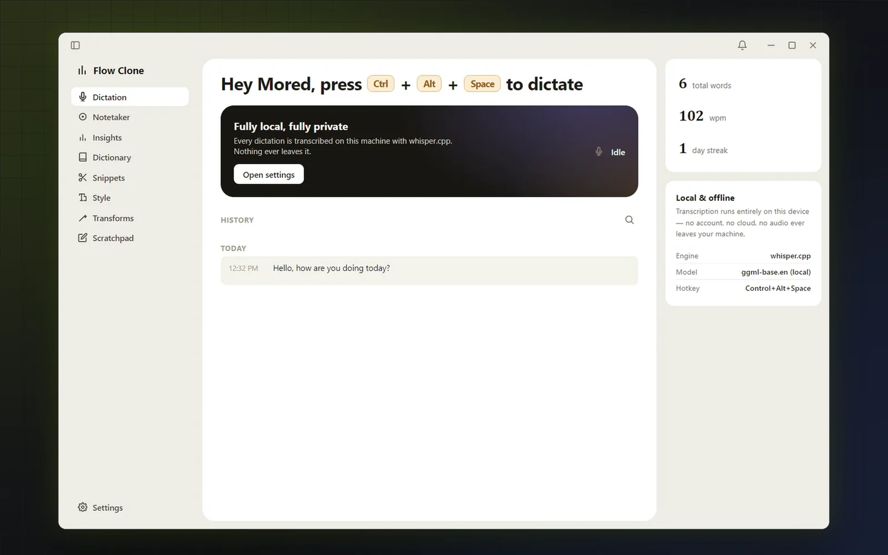
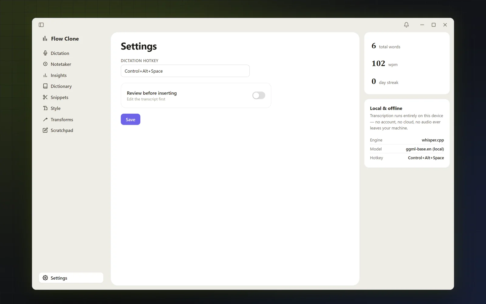
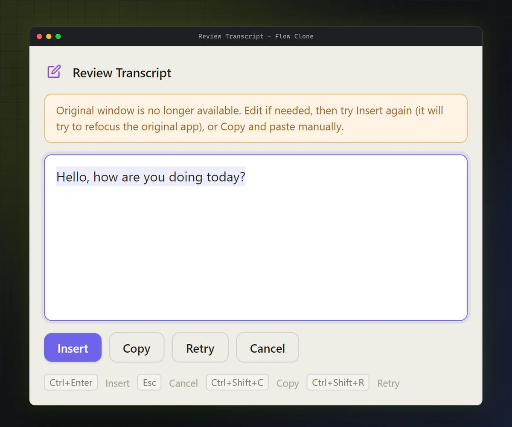

Wispr Flow is a voice dictation app: you press a shortcut, speak, and the text appears in whatever window you were typing in. I wanted to know how it does that, and whether I could build a small version of it myself.
I had no source code, only the app installed on my own Windows machine. It's an Electron app whose installation contains an app.asar archive of bundled JavaScript, which made it a good target for REA. This post covers what that investigation found and didn't, and how I then built flow-clone, which went from the OpenAI API to fully local speech recognition with whisper.cpp. The investigation shaped my thinking, but I won't claim every design choice came from a specific finding.
02What is REA?
REA, short for Reverse Engineer Anything, is an open-source toolkit that gives AI agents real analysis tools, so their conclusions rest on evidence they collected rather than on guesses. I used its command-line interface. The project is morluto/rea on GitHub, with an installation guide in its docs.
03How REA works
I used it in a loop: pick a narrow question, run the analysis, sort each finding into what I observed, what I was inferring and what I still didn't know, then turn the unknowns into smaller questions.
How I used REA, with the gaps this run actually recorded.
04Investigating Wispr Flow
Running the analysis
I pointed REA at the app.asar of Wispr Flow 1.6.1167 with four questions: how it captures speech, gets a transcription, connects its components and inserts text into other apps. I used rea-agents 6.5.0 on Node.js 22 (the path is a placeholder):
The first run stopped on an integrity mismatch in an unpacked native module (which alone doesn't prove corruption or tampering), so I reran it with --integrity-policy record-and-continue. That run took about ten minutes, and inspect-analysis-view summarised the evidence. REA's search command failed in that session, so nothing here comes from it.
What REA found
The summary covered 212 parsed JavaScript files, 3,511 modules and 207 IPC operations. The parts relevant to my questions, all found in the package rather than seen running:
Opus audio encoder workers.
Calls that write to Electron's clipboard.
A large IPC and contextBridge surface between the app's processes.
Package scripts that reference a Swift build of a native helper application.
It also reported two API paths, /audio/transcriptions and /organization/usage/audio_transcriptions, which looked like the answer to how the app transcribes. On a closer look, the strings most likely come from a third-party SDK bundled into the app, and nothing else backed them up.
Following up by hand
REA's workers ran out of memory on the main bundle and a few other large files, which REA marked as unexamined instead of guessing. Its run didn't show which server the app talks to or how it inserts text on Windows, so I continued by hand: I unpacked the archive with asar, searched the minified bundles with ripgrep and read the relevant files. That turned up WebSocket endpoint strings on Wispr Flow's domain (wss://api.wisprflow.ai/ and a regional one), an IPC channel asking the native helper to simulate key presses, and a debugging utility whose comments describe reading the text around the cursor through accessibility APIs. Not every hit held up: an insertText match belonged to a bundled HTML parser. I also compared the findings with Wispr Flow's privacy policy and briefly ran the app to see which windows it opens.
05Building flow-clone
flow-clone does one thing: press Ctrl+Alt+Space, talk, press it again, and the text is pasted into the window you were working in. Its interface is a deliberate design study inspired by Wispr Flow. Underneath, it's an independent prototype with its own code; it isn't affiliated with Wispr Flow and doesn't claim to reproduce its internal implementation. Only Dictation and Settings work; the other sidebar items are placeholders.

flow-clone's dashboard, running on my computer.
From the OpenAI API to whisper.cpp
The first version was the simplest thing that could work. main.js wrote the recorded audio to a temporary WebM file, sent it to OpenAI's transcription API through the OpenAI SDK, put the result on the clipboard and had PowerShell's SendKeys press Ctrl+V.
Then I replaced the API with whisper.cpp, running whisper-cli.exe with the English ggml-base.en model. The app's code makes no network requests, and its windows block them with a Content Security Policy (connect-src 'none'), so the audio stays on the computer. Recording changed too: an AudioWorklet collects the browser's small audio blocks into 4,096-sample chunks, and the main process converts them to 16-bit PCM. Transcription isn't live; when you stop, the app writes a WAV file for whisper:
npm run setup downloads the whisper.cpp build and the model (about 148 MB, with a checksum that matches the official one), and the app won't record if either is missing. I also dropped an OpenAI formatting pass, so what gets pasted is whisper.cpp's output with surrounding spaces trimmed.
Pasting into the right place
Pasting into the wrong window is worse than not pasting, so most of the later work went here:
It checks the target. It notes the focused window when you press the hotkey, and records nothing if there isn't one or it's flow-clone's own.
It verifies before pasting. It brings that window back to the front and checks that this worked.
It keeps the transcript when pasting fails. A review window lets you edit, insert, copy or retry; an optional review mode shows every transcript first.
It shows its state in a small always-on-top status pill that doesn't take focus.
It keeps a local history of the last 200 dictations, with total words, words per minute and a daily streak.
Settings

Review window

Settings, with the hotkey and the review switch, and the review window, opened here from a history entry, so it reports that the original window is gone.
The bugs that taught me the most
A PowerShell console window that existed for a split second could steal focus and swallow the paste. Helper processes now run hidden.
Windows often ignored a background process's request to bring a window to the front. In my tests, an empty SendKeys first made it work much more often; I don't know exactly why, and it's no guarantee, so the app still checks the result.
The status pill is hidden between dictations, not destroyed, but a hidden window still counts as open, so closing the dashboard left the app running invisibly. Closing it now cleans up the other windows.
An invalid shortcut made Electron throw after the old one was already removed, silently killing the global hotkey until a restart. A bad shortcut now falls back to the previous one.
One PowerShell call had no timeout, so a hung process could leave a dictation stuck on "processing". Every helper call has one now.
06Architecture and trade-offs
flow-clone is one Electron app with three windows: dashboard, review window and status pill. Everything that touches the operating system lives in the main process, and the Windows-specific parts run in short-lived, hidden PowerShell processes that call user32.dll, which avoided a native dependency.
flow-clone's dictation pipeline, drawn from main.js. Solid arrows are the normal path; dashed arrows are guards and fallbacks.
Cloud API or local model?
Version 1
Current version
Transcription
OpenAI transcription API
Local whisper.cpp (ggml-base.en)
Where audio goes
To a cloud service
Stays on the computer
Audio handling
Finished recording saved as WebM
Chunks over IPC, converted to PCM, saved as WAV
Setup
An API key
npm run setup for the binary and model
Pasting
Clipboard and Ctrl+V
Same, but only after the target window is verified
Extras
None
Review window, status pill, history and statistics
Local inference removes the transcription service once setup is done, but brings its own work: shipping a model, running fast enough on the user's hardware, and supporting each platform. I haven't benchmarked either version, so I make no claim that the local one is faster or more accurate.
Pasting into another app
Between the hotkey and the paste, the target window can close or lose focus, so flow-clone restores the window it noted at the start and checks that Windows really brought it to the front:
If the check fails, nothing is pasted and the transcript goes to the review window. The approach is Windows-only, and since flow-clone saves and restores only plain text, pasting replaces anything else on the clipboard, such as an image.
07What I learned
A search hit is a question, not an answer
The API paths looked like exactly what I wanted and told me nothing about how Wispr Flow transcribes. I now read the code around a match before believing it.
Write down what failed
The failed search, the memory limits and the files REA couldn't examine showed where the evidence ran out and where to dig by hand next.
Agents are fast, so verification matters more
AI agents speed up investigation and coding, and make it just as easy to write a confident summary that mixes up what a tool observed with what someone assumed.
08Try it yourself
Pick software you're allowed to inspect; owning a copy doesn't automatically permit every kind of reverse engineering.
Install REA from its installation guide and pin the version so your results can be reproduced.
Run the workflow that fits your target, keep the output (including failed steps), and note the evidence behind every conclusion.
Build a small prototype around one clear feature, and when you publish, share your method and findings, not someone else's code.
09Conclusion
REA gave me a first map of Wispr Flow's Electron package, and reading the files by hand filled in more of it, including where the evidence stopped. flow-clone grew from a three-step script around a cloud API into a local whisper.cpp app that checks where it pastes and keeps your transcript when pasting fails. Reverse engineering didn't hand me a clone; it gave me a clear picture of the problem.